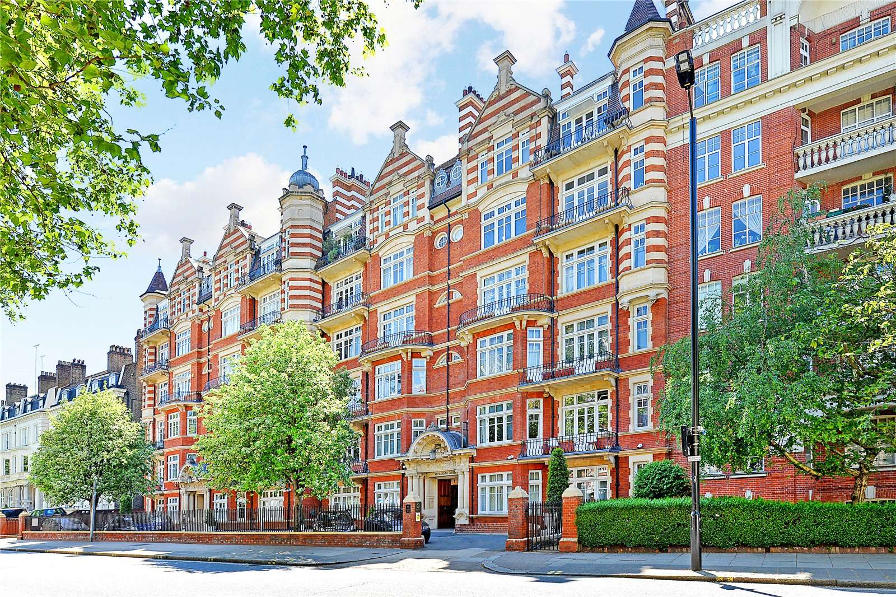
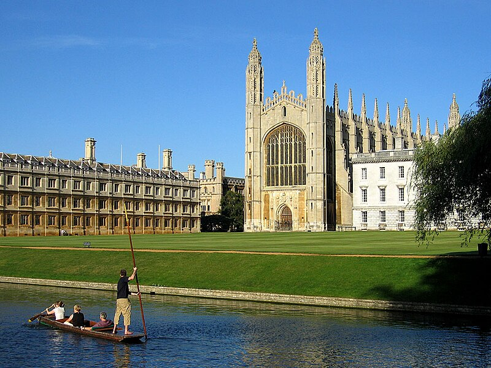

Alan Turing was a pioneering mathematician, logician, cryptanalyst, and computer scientist who made profound contributions to several fields,
most notably in the development of modern computing and breaking the German Enigma code during World War II.
Born on June 23, 1912, in London, England, Turing displayed exceptional intellectual abilities from an early age. He is known today as the father of computer science .

Early Life
Alan Mathison Turing was born on June 23, 1912 in Maide Vale, London. He was the son of a civil servant and was educated at a top private school.
His teachers recognized his genius early on. Turing was raised in southern England.
Education and Career
Turing entered the University of Cambridge to study mathematics in 1931. After graduating in 1934, he was elected to a fellowship at King's College in recognition of his research in probability theory.
In 1936, Turing moved to Princeton University in the United States to study for a doctorate in mathematical logic under Alonzo Church's direction, which he completed in 1938.
Turing made major contributions to mathematics, cryptanalysis, logic, philosophy, and mathematical biology, and also to the new areas later named computer science, cognitive science, artificial intelligence, and artificial life.
During the Second World War, Turing worked for the Government Code and Cypher School at Bletchley Park, Britain's codebreaking centre. He played a crucial role in cracking intercepted coded messages
that enabled the Allies to defeat the Axis powers in many crucial engagements. After the war, Turing worked at the National Physical Laboratory, where he designed the Automatic Computing Engine,
one of the first designs for a stored-program computer. In 1948, Turing joined Max Newman's Computing Machine Laboratory at the Victoria University of Manchester, where he helped develop the Manchester computers.

Death
Turing died on June 7, 1954. The cause of his death was cyanide poisoning. His death was ruled a suicide,
but some evidence suggests it may have been an accident. He was only 41 years old.